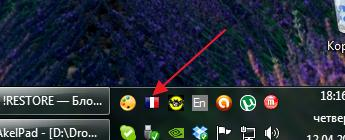
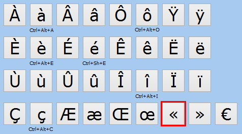
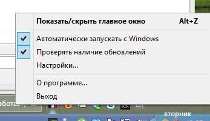
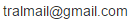

С помощью этой программы вы можете вставлять в тексты символы французской раскладки, не устанавливая её в системе.
После запуска программы ее значок появится в системном трее (области рядом с часами).
Для вызова программы в момент набора текста нужно нажать сочетание клавиш Alt+Z. Чтобы окно скрыть, нужно нажать Alt+Z, либо клавишу Esc, либо просто нажать на любой символ (он вставится и окошко закроется до следующего вызова по Alt+Z).
Можно кликнуть на нужный символ указателем мыши или выбрать его с помощью красной рамки, используя клавиши со стрелками на клавиатуре и клавишу Enter.
При щелчке правой кнопкой мыши, откроется контекстное меню программы
Программа автоматически будет запускаться вместе с Windows (при необходимости в контекстном меню вы можете такое поведение изменить). Программа задействует крайне мало системных ресурсов, так что может быть включена постоянно без ущерба для производительности компьютера.
Вы можете распространять данную программу без каких-либо ограничений ("как есть").
(C) Трубников Алексей, связь: 